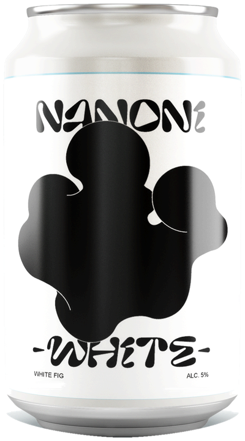

What is NANONI
お酒 “なのに” 無花果
日常 “なのに” 特別
シンプル “なのに” 満足
私たちの地元である愛知県蟹江町産の白いちじくの葉を使用して、 麦芽とホップに芳醇な香りを付けました。

蟹江町の白いちじく
NANONI の出発点は、地元の特産品です。
愛知県蟹江町は、古くからいちじくの名産地です。 ほかの品種より皮が白いことから「白いちじく」と呼ばれる 蓬莱柿（ほうらいし）やホワイトゼノアが育てられてきました。
NANONI -white- が使うのは、実ではなく葉です。 そのほうが香りがよく出ること。そして、ふだんは捨てられてしまう部分を 生かせること。その両方が理由です。
ご注文について
常温便とクール便（冷蔵）からお選びいただけます。 送料・お支払い方法・よくあるご質問はご利用ガイドにまとめています。